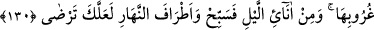

kimse taşlardan daha katı, durumu cansız varlıklardan daha kötüdür. Allah’tan
kalblerimizi yumuşatmasını niyaz ederiz.
130. (Rasûlüm!) Sen, onların söylediklerine sabret. Güneşin doğmasından önce
de batmasından önce de Rabbini hamd ile tesbih et; gecenin bir kısım saatleri ile
gündüzün etrafında (iki ucunda) da tesbih et ki, Allah’tan râzı olasın (Allah da
senden!).
Rasûlüm! “Sen, onların söylediklerine sabret.” Yâni mâdem ki zikredildiği üzere
onların azâbının te’hir edilmesi ihmâlden değil, imhâldendir mühlet vermektendir ve
mutlaka onlara gelip çatacaktır, o halde onların hakkında hüküm verilene kadar senin
hakkında söyledikleri inkâr sözlerine, sana sihirbaz ve deli demelerine sabret.
Rasûlullah (a.s.)’ın onların mutlaka azaba uğratılacağını bilmesi, onu tesellî eden ve
sabra sevk eden hususlardandı.
et-Te’vîlâtü’n-Necmiyye’de şöyle der: “Îtiraz ve inkâr ehlinin söylediklerine sabret.
Çünkü, sabır makamına ulaşmak için bunlarla terbiye edilmeye muhtaçsın.”[121]
Bazıları bu âyetin “kılıç âyeti” ile nesh edildiğini söyler. Tefsîr-i Kebir’de der ki:
“Bu âyetin mensuh olduğunu söylemek gerekli değildir. Çünkü Rasûlullah’ın onlarla
hem harb etmesi hem de onlardan işittiği eziyetlere sabretmesi mümkündür.”
Râğıb der ki: “Sabır, aklın ve şer‘in gerekli gördüğü şeye veya şeyden nefsi tutmaktır.
Sabır genel bir ifâdedir. Çeşitli durumlara göre farklı mânâları vardır. Sabır bir musîbet
anında nefse hâkim olmaksa buna başka bir şey değil “sabır” denir. Bunun zıddı şikâyet
etmek/sızlanmaktır. Harbde sabrın adı ‘şecâat’tir. Zıddı ise korkaklıktır. Bir felâket
anında sabretmek göğüs genişliğidir. Bunun aksi gönlü daralmaktır. Sabır söz saklama
konusunda ise ona “kitmân” denir. Bunun zıddı da sözü saçmak, dağıtmaktır. Allah bütün
bunları “sabır” diye isimlendirmiş ve şu âyetlerde onlara işâret etmiştir: “Sıkıntı,
hastalık ve savaş zamanlarında sabredenler.” (el-Bakara, 2/177), “Başlarına gelene
sabrederler.” (el-Hac, 22/35), “.... sabreden erkekler ve sabreden kadınlar…” (el-
Ahzâb, 33/35) Sabrın bir çeşidi gibi olduğu için oruca da ‘sabır’ denir.
“Güneşin doğmasından önce de batmasından önce de Rabbini hamd ile tesbih et;”
Seni hidayetine ve tevfîkine erdirmesinden dolayı Rabbine hamd ederek namaz kıl.
Burada bir şeyin tamamına, bir bölümünün isminin verilmesi söz konusudur. Çünkü
tesbih ve Allah Teâlâ’yı zikretmek, kişiye gönül huzûru ve rahatlık verir. Kendisine
isâbet eden bütün gamları ve üzüntüleri unutturur. Nitekim âyette şöyle buyrulur: “İyi
bilin ki kalbler ancak Allâh’ı anmakla huzur bulur.” (er-Ra‘d, 13/28)